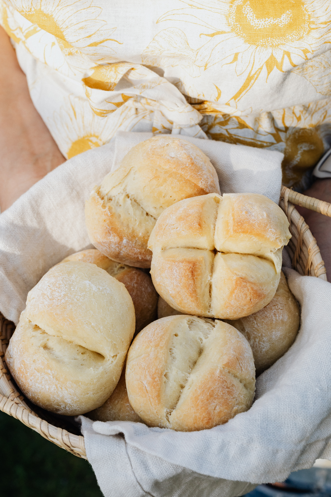
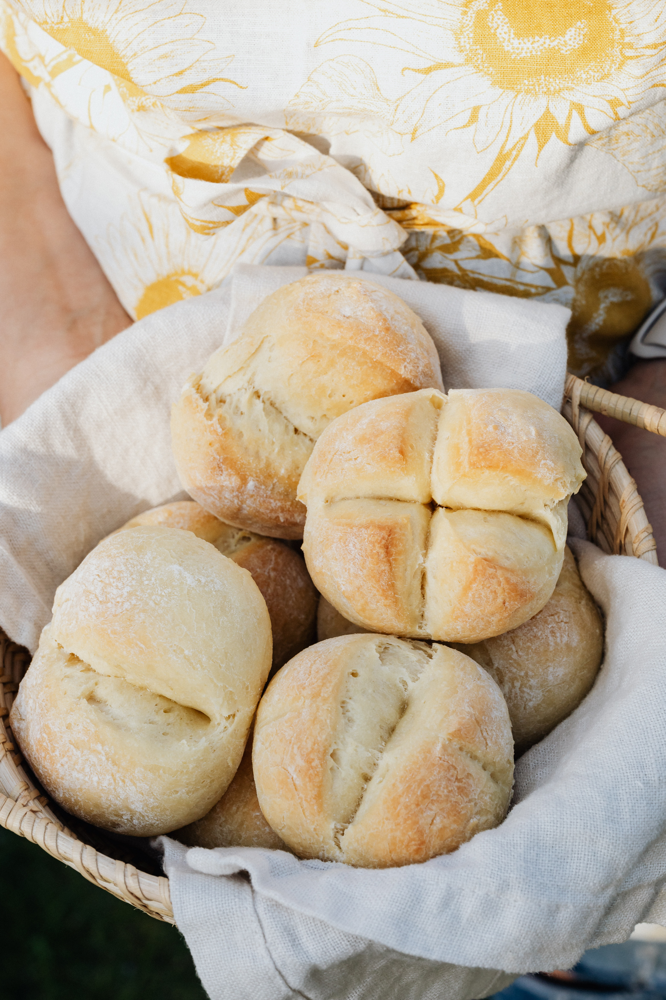

Fresh bread. Made for you
Only made from the finest ingredients. Supported by our local farms and community.
Want some bread?

 

About us
At our bakery, we knead dreams into reality. With a deep-rooted love for the art of bread-making, we have mastered the delicate balance of science, tradition, and innovation. Our bakers, with their experienced hands and discerning palates, transform simple ingredients into tantalizing loaves that delight your senses.